Hobbies
Club Activity
Achievements
- 6th place in Ibaraki Prefecture Sports Festival (2018) Decathlon
- 6th place in Ibaraki Prefecture Athletics Championships (2018) Decathlon
- 14th place in U20 Japan Athletics Championships (2020) Decathlon
Comment
I have been doing track and field athletics from elementary school to university. I participate in decathlon, which is considered one of the toughest events in athletics due to its ten disciplines. It is indeed very challenging.


*Player introduction before U20 400m race, Pole Vault,Juveline Throw
My Cats
Name
- Kinako
- Azuki
- Warabi
Comment
I would like to introduce my family in Japan. Their names are Kinako, Azuki, and Warabi. Kinako and Azuki are siblings who came to our family from my grandmother's house when they were babies.
Warabi is the youngest and was adopted from a senior when I was a university student. They all have different personalities, but they are incredibly cute and important family members. There is a little trivia that they are named after Japanese sweets.
 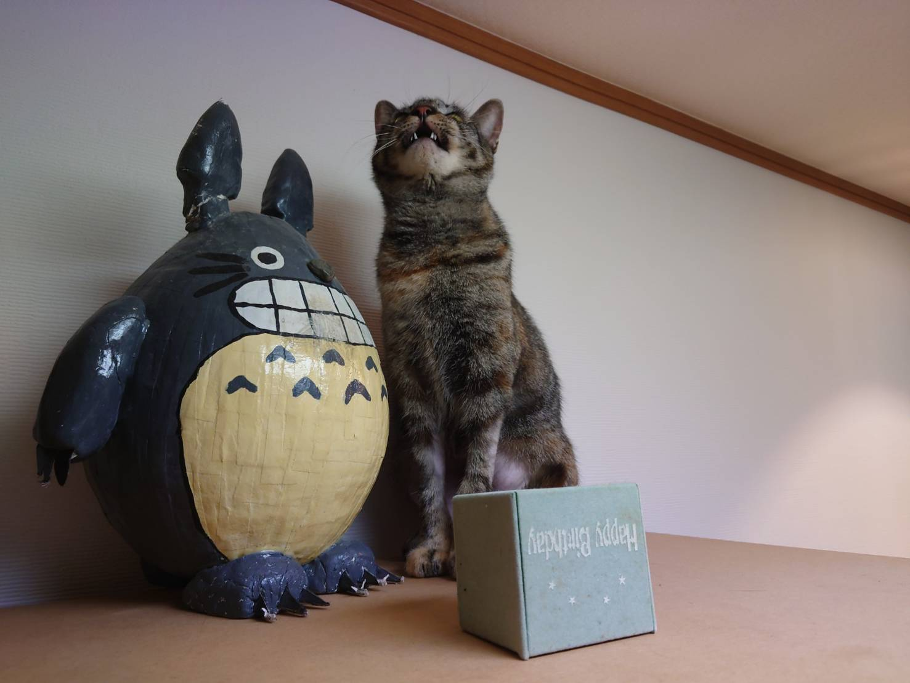
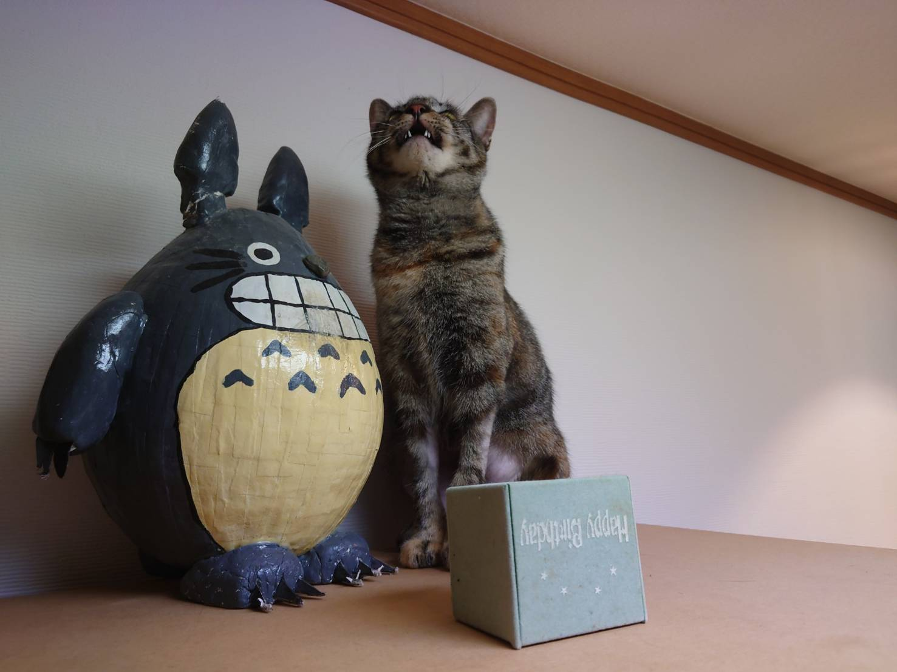
*From right to left: Kinako, Azuki, Warabi, Wrabi with Totoro
Travel
I quite like traveling (although I haven't had much time for it recently...)
Immersing myself in environments that I usually don't experience is enjoyable. Here are some photos from interesting travel destinations.
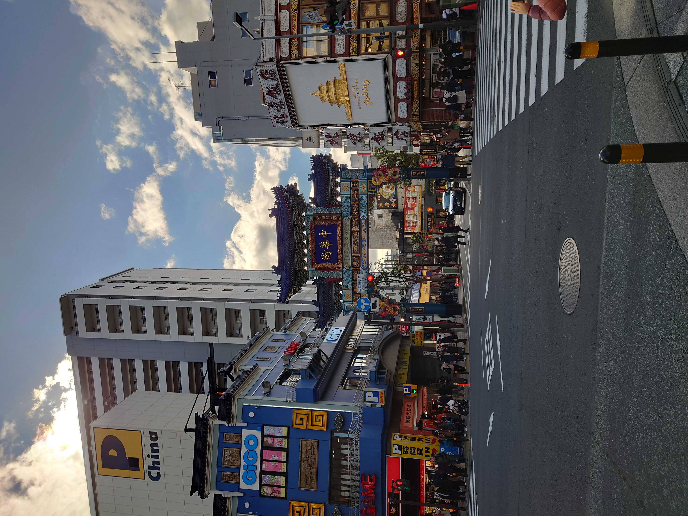 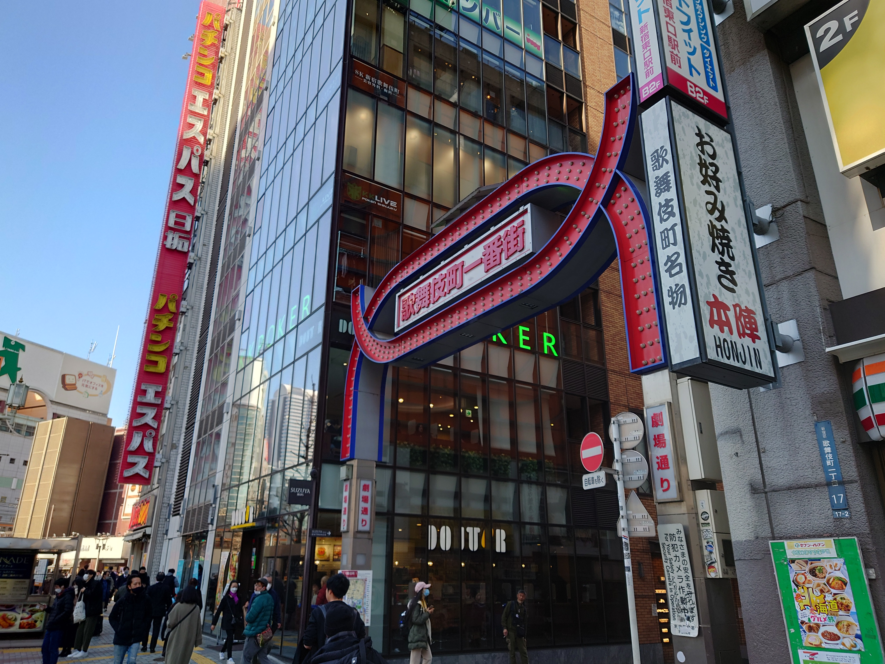
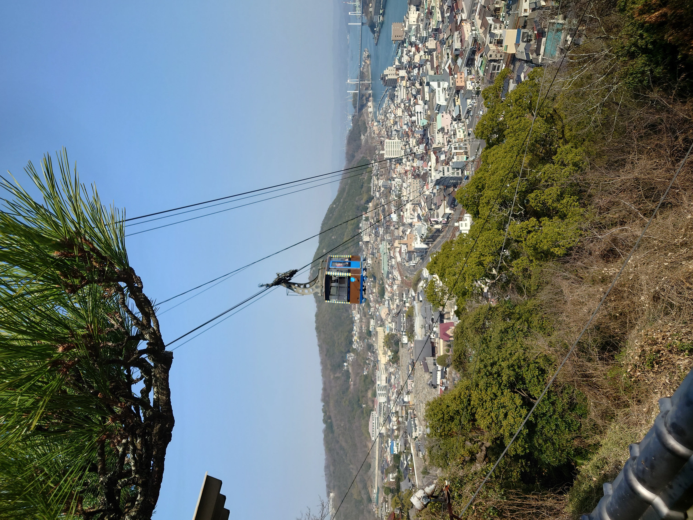
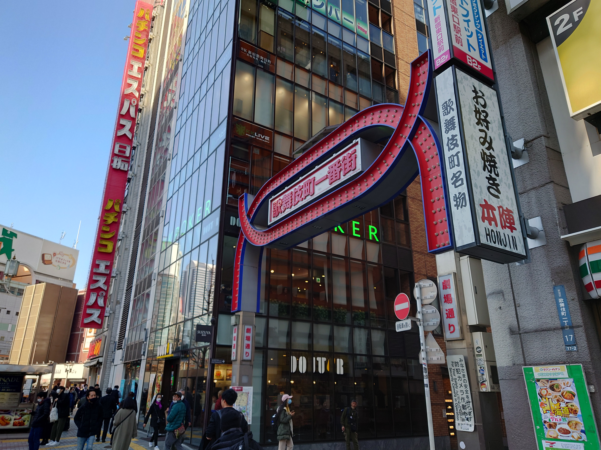
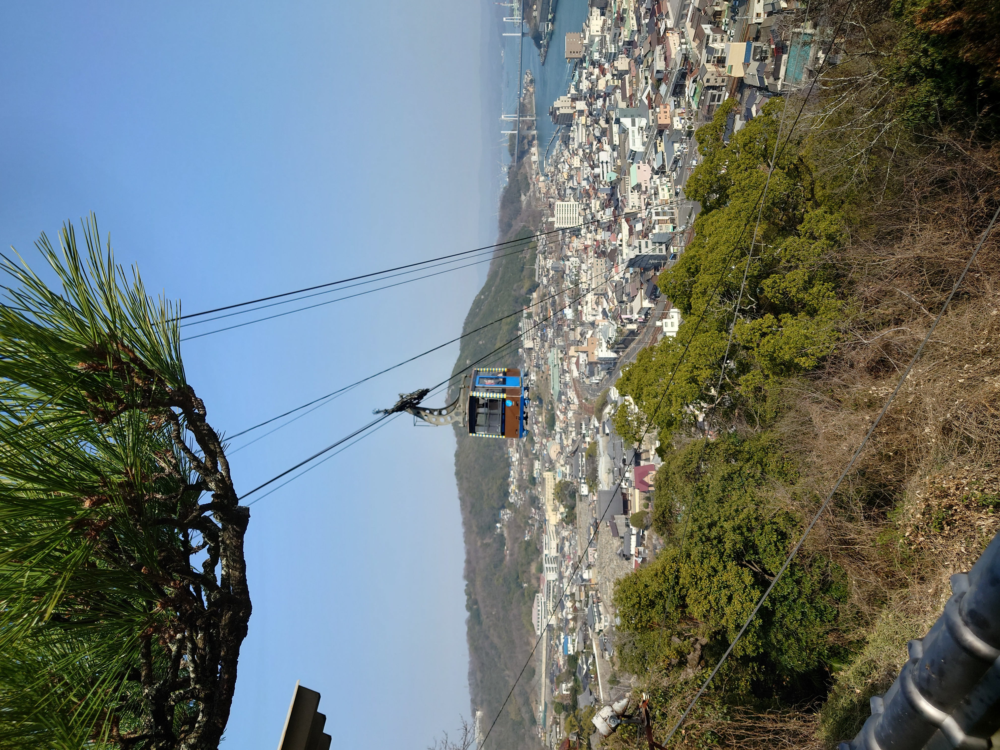
 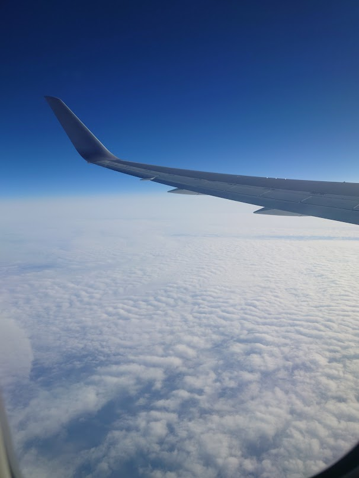
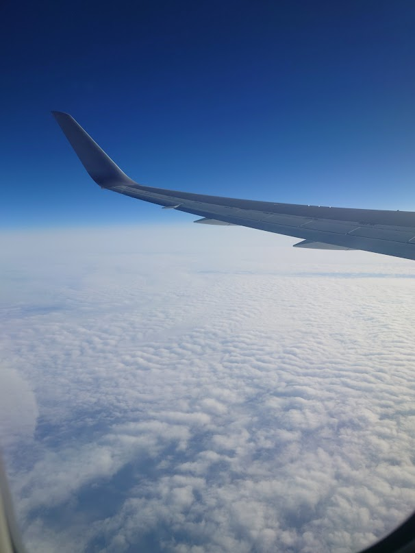

 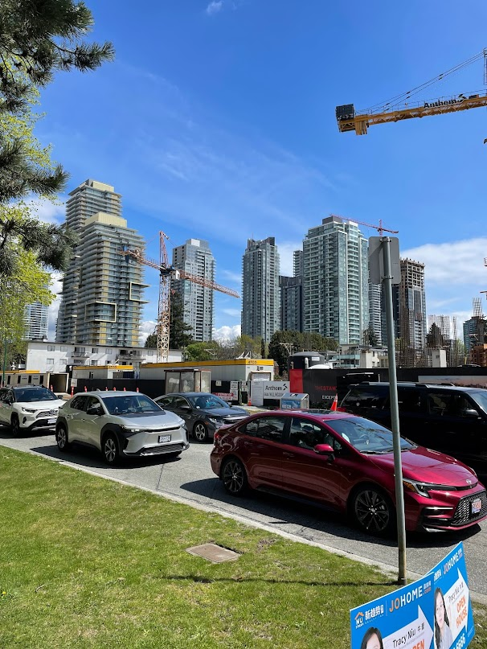
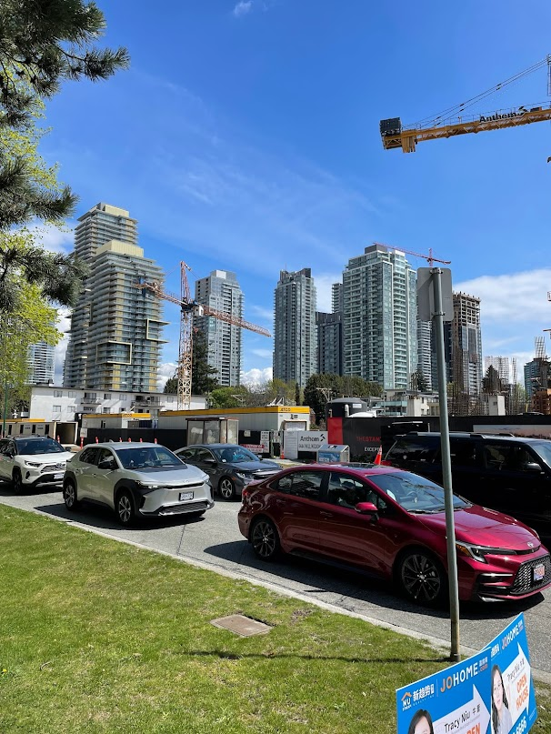
 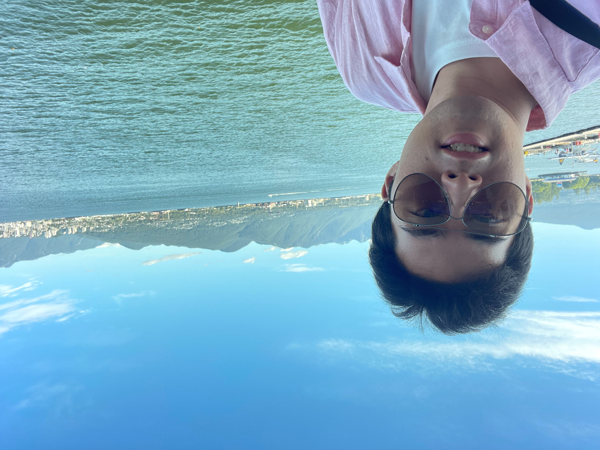
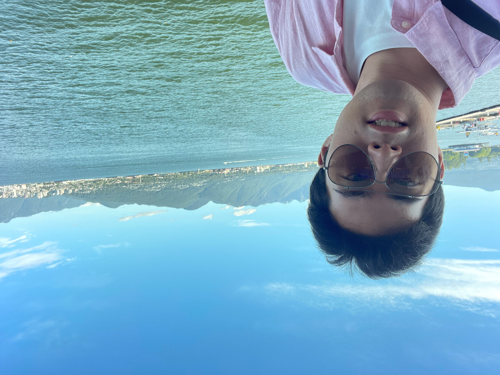

*From top left: Yokohama, Tokyo Skytree, Kabukicho, Onomichi, Seto Inland Sea, Pacific Ocean, Vancouver 1, 2, 3,Central Park,Downtown,Metro Police